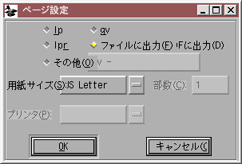

印刷
FontForge の印刷処理では PostScript を出力するだけです。これをファイル、プリンタ、ghostview または任意のコマンドに送ることができます。
印刷(P)... コマンドを選択したとき、以下のような内容を印刷することを選択できます。
-
フォント内の全文字を、長方形のグリッド内に印刷する。

-
いくつかの選択された文字を、1 文字につき 1 ページを使って、ページを埋め尽くす大きさで印刷する。

-
いくつかの選択された文字をさまざまなポイントサイズ (72, 48, 36, 24, 20, 18,
16, 15, 14, 13, 12, 11, 10, 9, 8, 7.5, 7, 6.5, 6, 5.5, 5, 4.5, 4) で印刷する。

-
フォントの実際に使用したサンプル。ここではカーニング、左右双方向からのテキスト、アンカーつきマークと合成文字も正しく処理されます。注意: 印刷される文字は現在のエンコーディングに含まれている物に限ります。すべての文字を印字したい場合は、Unicode エンコーディングを試してみてください。

 右に表示されているのは
右に表示されているのは [印刷] ダイアログです。上の 4 つの選択肢に対応するラジオボタンがあります ([ページいっぱいに文字を印刷] ボタンと [サイズを変えてグリフの列を印刷] ボタンは、フォントビュー内で選択中のすべての文字とアウトラインビュー内の現在の文字、メトリックビューで表示中のすべての文字を印刷します——フォントビューで文字を選択していないときはこれらは選択できないように灰色表示になっています)。
ポイントサイズ(P) フィールドは、フォント内の全文字を印刷(F) と サンプルテキスト の 2 つの方式のときに使用されます。サンプルテキスト印刷では、いくつかの異なるテキストサイズを (カンマで区切って) 入力して、サンプルを複数のポイントサイズで印刷することができます。
「サンプルテキスト」は全くその名の通りの仕事をします。デフォルトのサンプルテキストは印刷するフォントに合わせて表示されます。(例えば) フォントにギリシャ文字が含まれないときにはギリシャ語は現れません。もちろん、どうしても印刷したいならテキストを変更することはできますが……。
テキストエリアで Control+S をタイプすることにより、サンプルテキストを保存することができます。テキストは UCS2 フォーマットで保存されます (先頭に 0xfeff がつきます)。また、Control+I をタイプすることにより、テキストエリアにテキストを取り込むことができます。取り込むファイルは UCS2 (バイト順が逆でも構いません。先頭の U+FEFF で判定します) か、UTF8 (この場合も先頭に U+FEFF がつきます) または現在のデフォルトエンコーディングが使用できます。
[設定(E)] ボタンを押すとプリンタ、ページサイズなどを選択することができます。

結果を lp または lpr にキューするか、ghostview で直接表示するか、単純にファイルに出力するかを選ぶことができます。ファイルフォーマットは PostScript か PDF のどちらかを選ぶことができます (ファイルに送る場合、(ページ設定ダイアログではなく) 印刷ダイアログで [OK] を押した後でファイル名の入力を求められます。また、あなたが選んだ任意のコマンドに印刷結果を送ることもできます ([その他(O)]オプション)。このコマンドは標準入力から PostScript ファイルを見つけることを予期して作られたものでなければならず、もし、コマンドが何らかの引数を必要とするのであれば (ありふれた例としては、多くのコマンドが標準入力を読む指定のために“-”を使うというものを挙げられるでしょう)、それらもコマンド名と一緒にテキストフィールドに入力する必要があります。
FontForge はいくつかの用紙の標準サイズを知っています。リストにないサイズの用紙を使いたい場合は、「8.5x11in」や「21x29.7cm」のようにサイズを入力してください。
FontForge は、プリンタのリストを得るためにシステム上の printcap ファイルを読み込みます。また、それに加えて特殊な項目が 1 個あり、“<default>”という項目を選ぶと (またはプリンタ欄を空白のままにしておくと) lp や lpr はデフォルトのプリンタを選択します。
プリンタ(P) と 部数(C) 引数は、ghostview やファイルへの出力を選択したときは効果がありません。
明らかに、私のサンプルはヨーロッパと CJK の文字セットに偏っています。もしどなたか、まだ存在しないテキストで書かれた短いテキストがあれば、当方までコピーを送ってください。もちろん、著作権の問題のないものに限ります。できれば Unicode での符号化をお願いします……
サンプルの元ネタ...
— ファイル(F) メニュー — 目次
—